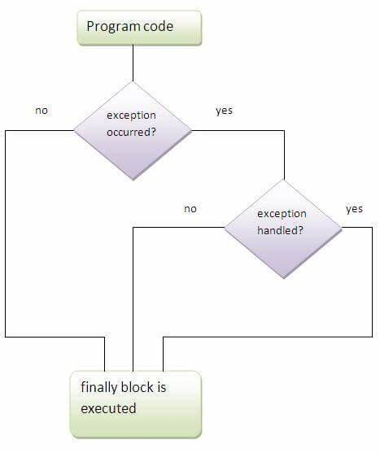

FINALLY KEYWORD
DEFINITION:
The finally keyword is used to create a block of code that follows a try block. A finally block of code contains all the crucial statements which always executes, whether or not an exception has occurred.
SYNTAX:
try {
//Statements that may cause an exception
}
catch {
//Handling exception
}
finally {
//Statements to be executed
}
NEED:
“finally” block in java can be used to put "cleanup" code such as closing a file, closing connection etc. Putting cleanup code in a finally block is always a good practice, even when no exceptions are anticipated.
USAGE OF FINALLY KEYWORD:
- finally keyword is used to maintain flow of the program.
- It is used after the try block. Even if an exception is not handled, finally block maintains the flow without interruption of the program.

IMPORTANT POINTS TO REMEMBER:
- A finally block must be associated with a try block, you cannot use finally without a try block. You should place those statements in this block that must be executed always.
- For each try block there can be zero or more catch blocks, but only one finally block.
- An exception in the finally block, behaves exactly like any other exception.
WORKING OF FINALLY BLOCK:
- Finally block is optional, as we have seen in previous tutorials that a try-catch block is sufficient for exception handling, however if you place a finally block then it will always run after the execution of try block.
- In the normal case when there is no exception in the try block then the finally block is executed after the try block. However if an exception occurs then the catch block is executed before the finally block.
- finally works irrespective of return statements in try-catch block.
EXAMPLES:
1.When exception does not occur:

EXPLANATION:
As there is no exception, after the try block, catch block is not executed. The control of the program then
goes to finally block.
finally block is executed after every try block if present.
Flow of the program:
try - finally - statements after the block.
2.When exception occurs and not handled:

EXPLANATION:
There is an exception in the try block, catch block should be executed to handle the exception but there is no catch block. So the control of the program then goes to finally block. Statements after try-finally block are not executed, since exception is not handled.
Flow of the program:
try - finally.
Error
3.When exception occurs and corresponding catch block matches correctly:

EXPLANATION:
There is an exception in the try block, catch block should be executed to handle the exception. There is a catch block which matches with corresponding exception. So catch block is executed. Then finally block is executed. As there is no interruption while running the program, the last statement after try-catch-finally block is executed.
Flow of the program:
try -catch- finally-statements after the block.
4.When exception occurs and catch block mismatched:

EXPLANATION:
There is an exception in the try block, catch block should be executed to handle the exception, there is a
catch block, but mismatched. So the control of the program then goes to finally block. Statements after
try-catch-finally block are not executed, since exception is not handled.
This is as same as if there is no catch block.
Flow of the program:
try - finally.
Error
5.Exception inside finally block:

EXPLANATION:
There is an exception in the try block, catch block should be executed to handle the exception. There is a catch block which matches with corresponding exception. So catch block is executed. Then finally block is executed. As there is no interruption while running the program, the last statement after try-catch-finally block is executed.
Flow of the program:
try - finally - try - catch - statement after the block.
Circumstances where finally block does not execute:
- The death of a Thread
- Using the System. exit() method.
- Due to an exception arising in the finally block and not handled properly.
EXAMPLE:
System.exit() before finally block:

EXPLANATION:
This is a special circumstance where the program is terminated before the statement which causes error. finally block is not executed.
Flow of the program:
try upto System.exit() statement.
Real time usage:
Basically the use of finally block is resource deallocation. Means all the resources such as Network Connections, Database Connections, which we opened in the try block are needed to be closed so that we won’t lose our resources as opened. So those resources are needed to be closed in the finally block.

EXPLANATION:
The finally block is a key tool for preventing resource leaks. When closing a file or otherwise recovering resources, place the code in a finally block to ensure that resource is always recovered.
Difference between final, finalize and finally keyword:
| S.NO | FINAL | FINALIZE | FINALLY |
|---|---|---|---|
| 1. | Final is used to apply restrictions on class, method and variable. Final class can't be inherited, final method can't be overridden and final variable value can't be changed. | Finalize is used to perform clean up processing just before the object is garbage collected. | Finally is used to place important code, it will be executed whether an exception is handled or not. |
| 2. | Final is a keyword. | Finalize is a method. | Finally is a block. |